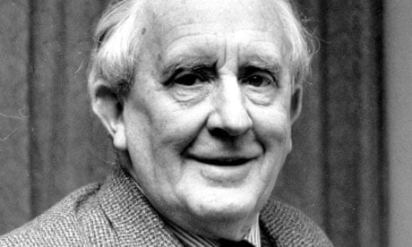

The author of Lord of the Rings is John Ronald Reuel Tolkien. John was born in what is now South-Africa in 1892. His father Arthur Reuel Tolkien was a bank manager and his mother Mabel Suffield stayed at home to watch the kids.
When John was 3 years old His mother took him and his brother, who was 1 year old at the time, to England for a lengthy family visit which turned out to be a permanent one when his father died and is mother was left without any income and was forced to move back with her parents.
Altough John did not go to school, he was home taught by his mother, he could read fluently at the age of 4 and write fluently shortly after.
When John was 12 his mother died of diabetes which back then whas lethal since insuline had not yet been invented.